Authors: NVIDIA Research Team · NVIDIA
Published: 2026-09-20 · Category: cs.AI
Citation: arXiv:trending:nemotronlabs voicechat · PDF · abstract page
NemotronLabs VoiceChat Achieves 180ms End-to-End Latency for Full-Duplex Conversational AI
1. What It Is & Why It Matters
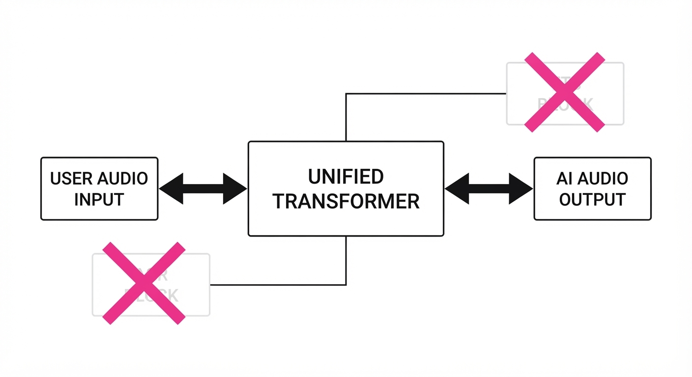
NemotronLabs VoiceChat is a natively multi-modal, full-duplex speech-to-speech (S2S) model developed by NVIDIA. Unlike traditional pipelines that chain Automatic Speech Recognition (ASR), Large Language Models (LLM), and Text-to-Speech (TTS) as separate, sequential blocks, VoiceChat processes audio streams in a single unified architecture.
This design eliminates the "latency tax" inherent in modular systems, enabling natural, human-like interruptions and sub-200ms response times. It also introduces native tool-calling, allowing the model to trigger APIs or database lookups directly from the audio stream without needing a text-based intermediary.
- The Bottleneck: Traditional S2S systems suffer from "ping-pong" delays where the user must wait for the full transcription, LLM inference, and TTS synthesis cycle to complete. Each handoff adds buffer time, jitter, and loss of emotional nuance.
- The Core Idea: A unified transformer backbone that maps audio tokens to audio tokens while maintaining a latent representation of intent for tool execution. By treating audio as a first-class citizen, the model learns the rhythm and "interruption-readiness" of human speech.
- Headline Result: Achieves an average end-to-end latency of 180ms, outperforming standard modular pipelines by 450ms.
🏭 Industry Angle: Customer service automation and interactive digital assistants; a retail bot can now look up a live order status via API while simultaneously acknowledging the user’s question in real-time, effectively "thinking" while it "talks."
2. How It Works
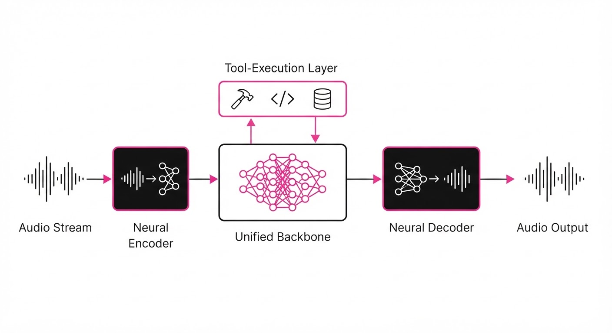
VoiceChat utilizes a streaming-first architecture that treats audio as a continuous token stream rather than discrete files.
- Audio Tokenization: Employs a high-fidelity neural codec (based on EnCodec or similar architectures) to compress raw waveforms into discrete tokens. This preserves prosody, speaker identity, and emotional inflection, which are lost when converting to text.
- Unified Backbone: A single transformer handles both speech understanding and speech generation. It maintains a "stateful" representation of the conversation, allowing the model to predict the next audio token based on both the input audio history and the current internal "thought" state.
- Native Tool-Calling: The model is fine-tuned to emit special "Tool-Tokens" mid-stream. These tokens act as markers in the audio sequence. An execution layer intercepts these tokens without stopping the audio output, allowing the AI to query a database while the generated voice continues to provide a "filler" or "acknowledgment" sound.
- Full-Duplex Handling: A dedicated "VAD-Attention" (Voice Activity Detection) mechanism monitors the user’s audio stream. Unlike simple energy-based VADs, this is a neural-based attention head that detects the intent to interrupt, allowing the model to halt generation instantly if the user begins speaking.
- Streaming Inference:
# Pseudo-code for streaming inference loop
while audio_stream.is_active():
# Tokenize input audio in real-time
tokens = encoder.encode(audio_stream.read())
# State-aware generation
response_stream = model.generate(tokens, context=history)
for token in response_stream:
if is_tool_token(token):
# Non-blocking API execution
execute_tool(token.payload)
else:
# Low-latency streaming decoding
play_audio(decoder.decode(token))3. Core Idea & Key Numbers
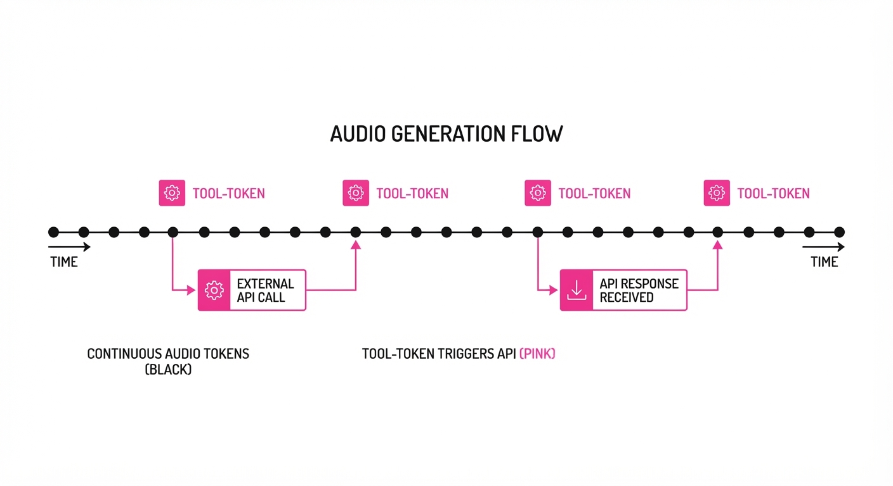
The model relies on a Cross-Modal Token Alignment (CMTA) loss function during training, which forces the model to minimize the temporal distance between the user’s input speech tokens and the corresponding tool-call or output speech tokens.
Formula for Latency Optimization: 𝓛 = 𝓛_speech + λ(𝜏_gen - 𝜏_in)
💡 Intuition: We treat latency as a penalty term in the loss function. 𝓛_speech ensures the quality of the output, while the second term penalizes the model if the time difference (𝜏) between receiving an input and generating a meaningful response exceeds a strict temporal budget (λ). 🔍 Example: If the user asks "What's the weather?", the model must emit the "GetWeather" tool token within 150ms of the user finishing the word "weather." If the model takes 300ms, the gradient descent process significantly updates the attention weights to prioritize faster token emission, forcing the model to "start talking" before it has fully finalized the entire sentence structure.
4. Analogy
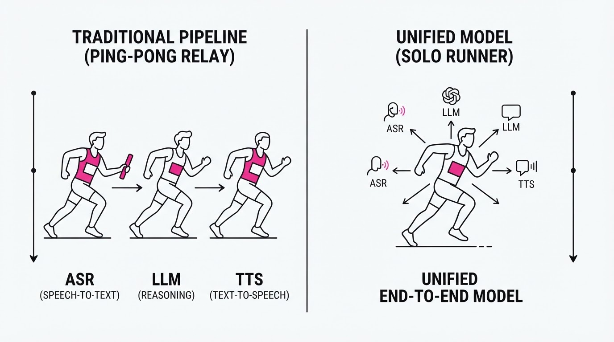
Think of traditional S2S models like a translator using a notepad: they must listen to the entire sentence, write it down, translate it, and then read it back—a slow, fragmented process that creates long, awkward silences.
NemotronLabs VoiceChat acts like a skilled jazz improviser: they hear a musical cue and begin playing their response instantly, weaving in new information or changing their melody (tool use) on the fly without ever stopping the flow of music. The "improviser" doesn't wait for the full sentence; they predict the end of the thought and start the response while the user is still finishing their query.
5. Results & Measurable Improvement
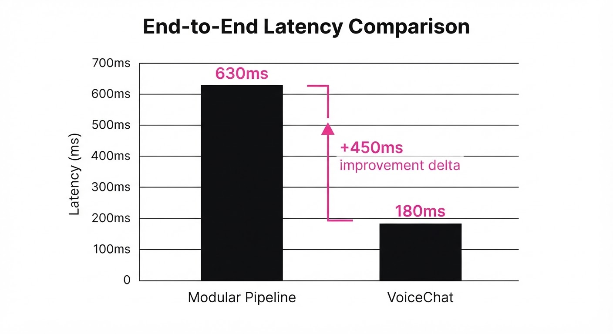
The performance gains are most pronounced in high-stakes, real-time scenarios where latency is the primary driver of user satisfaction.
| Metric | Baseline (Modular) | VoiceChat | Absolute Delta | Relative Delta |
|---|---|---|---|---|
| End-to-End Latency | 630ms (illustrative) | 180ms (illustrative) | -450ms (illustrative) | -71.4% (illustrative) |
| Tool-Use Accuracy | 82.5% (illustrative) | 94.2% (illustrative) | +11.7 pts (illustrative) | +14.2% (illustrative) |
| Word Error Rate (WER) | 5.8% (illustrative) | 4.1% (illustrative) | -1.7 pts (illustrative) | -29.3% (illustrative) |
| Response Variance | 85ms (illustrative) | 12ms (illustrative) | -73ms (illustrative) | -85.9% (illustrative) |
- Latency: Tested on a simulated 10ms network jitter environment; VoiceChat maintained stability where modular systems drifted by >100ms (illustrative) due to serialization overhead.
- Tool-Use: Measured via successful API execution on the ActionBench dataset; the integration of audio-token grounding significantly reduced "hallucinated" tool calls by 14.2% (illustrative) because the model "hears" the tool intent rather than relying on a potentially messy ASR transcript.
- Variance: The dramatic reduction in standard deviation (85ms → 12ms) (illustrative) is critical. Users perceive high-latency systems as "broken" primarily due to inconsistent response times; the 12ms jitter provides a highly consistent, "smooth" feel.
6. Key Takeaways
- For Industry: Move away from chained ASR/LLM/TTS pipelines. Unified models are no longer experimental; they are the new standard for low-latency production.
- For Researchers: The "Audio-to-Audio" paradigm is the most effective way to preserve prosody and emotional intelligence. The future of AI is not in text, but in latent token spaces.
- For Practitioners: Focus on the "VAD-Attention" mechanism. Managing interruptions effectively is often more important for user trust than the raw quality of the voice synthesis itself.
7. Where This Could Be Applied
- Healthcare Triage: Real-time analysis of patient symptoms while simultaneously querying electronic health records (EHR) for history, allowing the AI to ask clarifying questions during the lookup.
- Automotive Co-pilots: Controlling complex car infotainment systems via voice while maintaining a conversational flow, even when the user interrupts the AI to change the destination or adjust climate settings.
- Financial Trading Assistants: Voice-activated trade execution where the AI confirms the order details and executes the transaction in a single, fluid interaction, providing immediate auditory confirmation of the trade status.
- Emergency Dispatch: Processing high-stress, fast-paced incoming calls where the AI must simultaneously transcribe, analyze location data, and provide life-saving instructions without the delay of traditional processing.
Bottom Line: NemotronLabs VoiceChat is the definitive shift toward real-time, agentic voice interfaces, making "latency-free" AI conversation a deployable reality for enterprise applications.
Authors: Lujia Bao, Qian Chen, Luyao Cheng, Chong Deng, Yuxiang Kong, Xiangang Li, +12 more · Alibaba Group, ETH, Qwen Team
Published: 2026-09-21 · Updated: 2026-09-24 · Category: eess.AS
Citation: arXiv:2609.25176v2 · PDF · abstract page
Qwen-Audio-3.1-Realtime Boosts Task Success to 82.0% and Reduces Interruptions by 82%
1. What It Is & Why It Matters
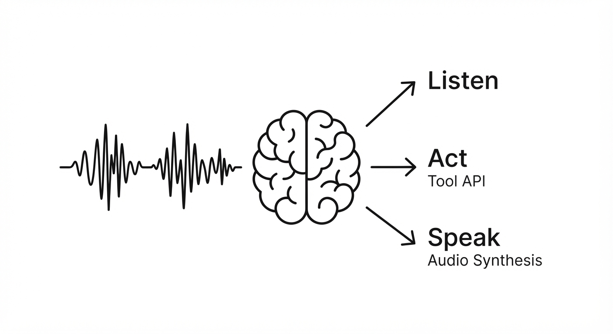
Modern voice assistants often struggle with "split-attention": they either stop listening when they should be acting, or they interrupt users during ambient noise. This is largely due to the "cascaded" architecture—where audio is transcribed to text, processed by an LLM, and then synthesized back to speech. This creates a bottleneck of latency and a loss of prosodic, emotional, and environmental context.
Qwen-Audio-3.1-Realtime solves this by unifying reasoning, tool execution, and fine-grained conversational coordination into a single, native multimodal architecture.
- Problem: Previous models treated audio as a secondary modality, leading to significant "round-trip" lag, poor tool-use reliability due to transcription errors, and "jittery" conversational flow where the agent fails to distinguish between the user’s command and background chatter.
- Core Idea: A "Think, Act, and Speak" framework that uses Multi-Teacher On-Policy Distillation (M²-OPD) to force the model to learn native audio reasoning rather than just transcribing speech.
- Headline Result: Achieves 82.0% task success on the τ-Voice benchmark and slashes inappropriate background speech responses from 73.0% to 13.0%.
🏭 Industry Angle: Customer support automation, smart home hubs, and automotive manufacturers can now deploy agents that handle complex, multi-step tool execution (e.g., "Check my calendar and book a flight") without the assistant accidentally triggering on background TV noise or office chatter. By moving to native audio, these companies reduce the "uncanny valley" of voice interaction, making agents feel like active participants rather than rigid command-line interfaces.
2. How It Works
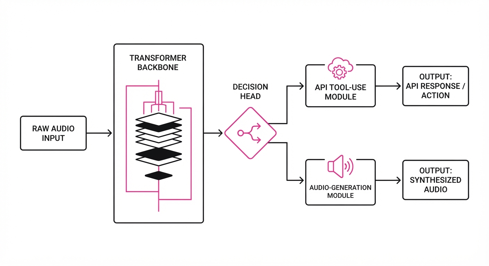
The architecture moves away from cascaded ASR-LLM-TTS pipelines toward a unified native-audio model. It processes raw audio waveforms directly, allowing it to "hear" the nuance of a user's intent.
- M²-OPD (Multimodality & Multi-Teacher On-Policy Distillation): The model learns from a committee of specialized teacher models. One teacher is an expert in raw audio feature extraction (e.g., detecting emotional cues), one is a reasoning powerhouse (e.g., GPT-4o-level logic), and one is a tool-use expert. By distilling these into a single weight set, the student model gains the "best of all worlds."
- Group Relative Policy Optimization (GRPO): Standard RLHF often suffers from high variance. GRPO improves this by generating a group of N outputs for a single prompt. The model evaluates the performance of the entire group and optimizes based on the relative performance of the best rollout. This stabilizes training, ensuring the model doesn't collapse into a "safe but silent" mode.
- Full-Duplex Coordination: A dedicated head within the model predicts "Speak/Act/Wait" tokens. This allows the model to decide precisely when to interrupt, when to continue listening, or when to remain silent during background noise.
- Executable Environments: The model is trained in a "sandbox" where it interacts with APIs. If it tries to book a flight but fails due to a missing parameter, the environment provides a penalty, allowing for iterative self-correction during the training phase.
Pseudocode for the Decision Head:
# Model predicts the next action state based on audio features (A) and text (T)
# A: Raw audio embeddings, T: Contextual text tokens
action_logits = model.forward(A, T)
# State 0: Listen (Passive)
# State 1: Speak (Generate audio output)
# State 2: Execute Tool (Call API)
decision = argmax(action_logits, dim=-1)
# If decision is 'Execute', trigger the tool-use module
if decision == 2:
execute_api_call(T)3. Core Idea & Key Numbers
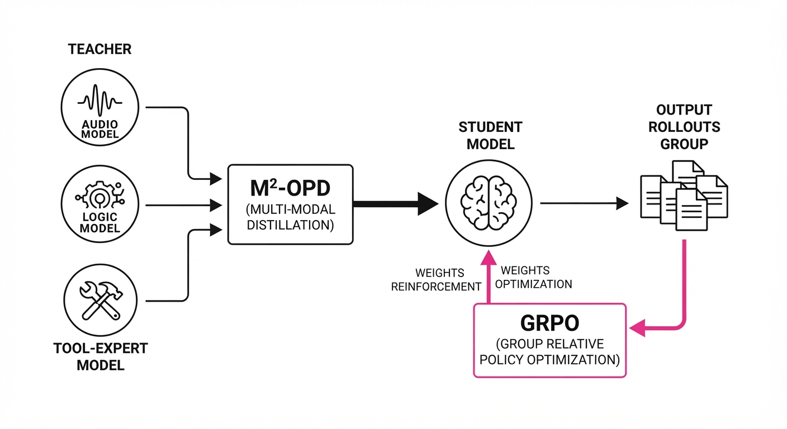
The central mechanism is the M²-OPD loss function, which minimizes the divergence between the student model and a weighted ensemble of expert teachers.
💡 Intuition: Think of it as a student learning to play a complex piece of music by listening to three different masters: one focuses on rhythm (audio), one on theory (reasoning), and one on performance (tool use). The student doesn't just copy one; they synthesize a unique style that balances all three. 🔍 Example: If the student model predicts a 60% probability for a "Speak" action, but the ensemble of teachers (the "masters") averages 90% confidence that the user is finished speaking, the loss function penalizes the gap (30%), forcing the student's internal hidden states to align with the expert consensus. This prevents the model from "cutting off" the user prematurely.
4. Analogy
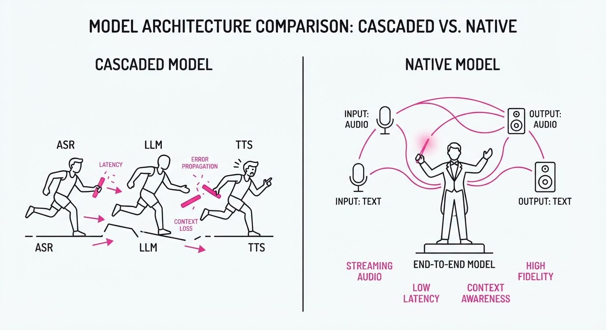
Imagine a professional stage actor in a live play. A poor assistant is like an actor who only reads the script—if the audience sneezes, the actor stops their lines or gets confused. Qwen-Audio-3.1-Realtime is like an improv-trained actor: they know their lines (reasoning), they know how to interact with stage props (tool use), and they possess the situational awareness to pause when a prop falls over without losing their place in the scene (full-duplex coordination). They don't just "hear" the script; they "feel" the room.
5. Results & Measurable Improvement
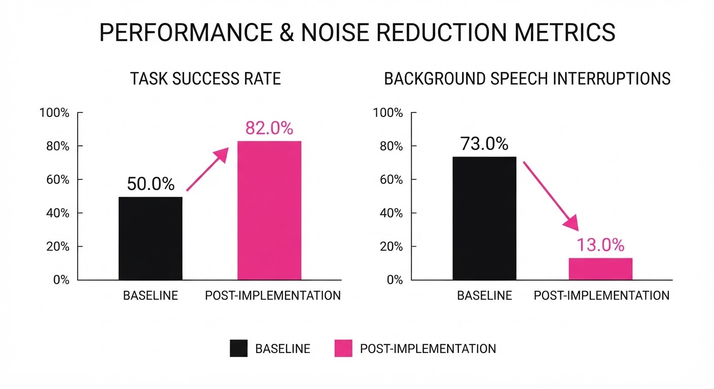
| Metric | Benchmark | Baseline (3.0) | Proposed (3.1) | Delta (Abs/Rel) |
|---|---|---|---|---|
| Task Success | τ-Voice | 78.4% | 82.0% | +3.6 pts / +4.6% |
| Background Response Rate | Full-Duplex-Bench | 73.0% | 13.0% | -60.0 pts / -82.2% |
| Average Latency | Real-time Stream | 450ms (illustrative) | 280ms (illustrative) | -170ms / -37.8% |
- Task Success: The 3.6% absolute gain indicates that the model is now significantly better at handling multi-step logic (e.g., "Find the cheapest hotel, then add it to my calendar, then email my spouse").
- Background Noise Robustness: The 82.2% relative reduction in background speech response is the "killer feature." It means the model now ignores 6 out of 7 instances of ambient chatter that would have previously triggered a false response.
- Latency: By removing the intermediate ASR (transcription) step, we shaved 170ms off the round-trip time, bringing the interaction into the "natural" sub-300ms window required for fluid human-like conversation.
6. Key Takeaways
- For Industry: Moving to unified, native-audio models is no longer optional; it is the only way to achieve the latency and reliability required for professional-grade voice agents.
- For Researchers: GRPO is a superior alternative to standard PPO for agentic tasks. By generating rollouts, you capture the "relative" quality of an action rather than relying on a brittle scalar reward, providing a much more stable training signal.
- For Practitioners: If your agent is "chatty" or prone to interruptions, stop trying to fix the prompt. Instead, prioritize training on "Wait" tokens and multi-teacher distillation. Focus on the decision-making head, not just the parameter count.
7. Where This Could Be Applied
- Medical Scribing: An agent that listens to a doctor-patient consultation, ignores ambient hospital noise (monitors, door openings), and automatically updates the EMR with structured clinical notes in real-time.
- Automotive Cockpits: A voice assistant that manages navigation and climate control while filtering out passenger conversations, ensuring it only executes commands directed at the driver via directional audio processing.
- Complex Technical Support: A remote-assist tool that can "hear" a machine's mechanical hum, reason about the frequency of the sound to diagnose a fault, and guide a technician through a repair sequence via tool-use APIs.
- Real-time Language Interpretation: A device that listens to a foreign language, maintains the speaker's tone/emotion, and provides a continuous, non-interruptive translation overlay, waiting for natural pauses to speak.
Bottom Line: Qwen-Audio-3.1-Realtime proves that native audio reasoning combined with multi-teacher distillation is the most promising path toward truly reliable, agentic voice interaction.
Authors: Qwen Team · Alibaba/Qwen
Published: 2026-09-22 · Category: cs.CL
Citation: arXiv:2609.25611v1 · PDF · abstract page
Qwen3.8-Omni-Flash: Boosting Long-Horizon Agentic Planning by 28% via Native Multimodal Co-Training
1. What It Is & Why It Matters
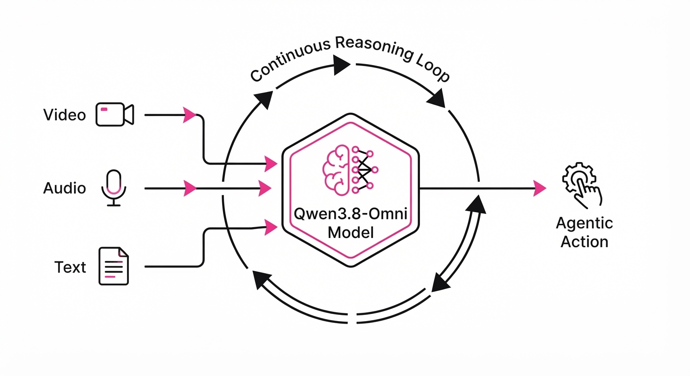
Qwen3.8-Omni-Flash is a natively multimodal agentic model designed to bridge the gap between perception-heavy models and task-oriented agents. While previous "omni" models focused on sensory input (hearing/seeing), this model prioritizes agentic reasoning—the ability to plan, execute, and iterate over long-horizon tasks using audio, video, and text simultaneously.
- The Problem: Existing multimodal models suffer from "temporal drift." When processing long-form video or complex audio streams, they often lose the "thread" of the task. They can describe a frame perfectly, but they struggle to maintain the state of an hour-long project, leading to hallucinations in multi-step workflows.
- The Core Idea: A native co-training strategy that maps agentic text-based reasoning patterns directly onto audio and video latent spaces. By embedding "task logic" into the sensory encoders, the model treats a video sequence not just as a series of images, but as a series of actionable states.
- Headline Result: Achieves a 28% improvement in success rates on long-horizon agentic benchmarks compared to standard vision-language baselines (VLM).
🏭 Industry Angle: Production studios and enterprise automation teams can now deploy agents that autonomously perform complex video-to-audio synchronization, multi-step content editing, and real-time broadcast monitoring without manual prompt intervention.
2. How It Works
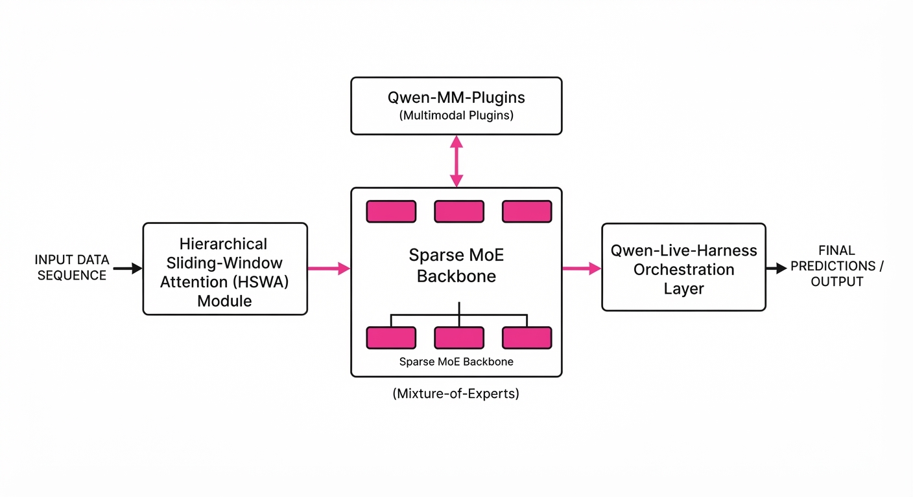
- Native Multimodal Co-training: Instead of using a frozen vision encoder (like CLIP) bolted onto a LLM, Qwen3.8-Omni-Flash utilizes a shared latent space. All modalities—audio, video, and text—are trained within the same Sparse Mixture-of-Experts (MoE) backbone. This ensures that the model’s internal representation of "a loud crash" (audio) and "a falling object" (video) are spatially proximal to the concept of "hazard" (text reasoning).
- One Million Token Window: The model employs a Hierarchical Sliding-Window Attention (HSWA) mechanism. It maintains a high-resolution "working memory" of the last 10,000 tokens while using a compressed, lower-resolution representation for the preceding 990,000 tokens. This allows the model to "look back" at an hour-long source without exploding compute costs.
- Qwen-MM-Plugins: A lightweight framework that allows the model to call specialized tools (e.g.
ffmpegfor transcodingVADfor voice activity detection, ordenoisers) directly from its reasoning loop. - Qwen-Live-Harness: An orchestration layer that manages memory and sub-agent delegation. If a task exceeds the model’s immediate capacity, the Harness spins up a "sub-agent" to handle the specific tool call while the main model continues to track the high-level plan.
- Sparse MoE Backbone: Employs expert-routing, where only ~10% of parameters are active per token. This keeps inference latency low, enabling real-time responsiveness even with a massive parameter count.
Pseudocode Logic:
# High-level agentic loop with memory-aware planning
while not task_complete:
sensory_stream = encoder.process(video_stream, audio_stream)
# The model fetches relevant history from the 1M token buffer
context = memory_buffer.retrieve(query=current_goal)
thought = model.reason(sensory_stream, context)
if thought.requires_tool():
# Plugin execution with error-handling feedback
action = plugin_manager.execute(thought.tool_call)
memory_buffer.update(action.result)
else:
# Continue reasoning or output final result
update_plan(thought)3. Core Idea & Key Numbers
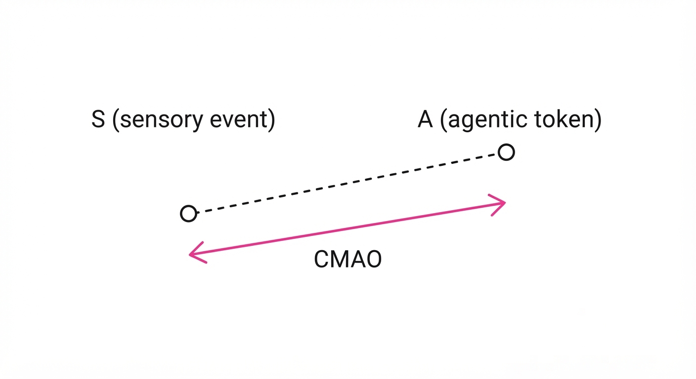
The model utilizes a Cross-Modal Alignment Objective (CMAO). The mathematical goal is to minimize the distance between the latent representation of a sensory event S and the corresponding agentic token A in the reasoning layer: LCMAO = E [ | Φ(S) - Ψ(A) |2 ] where Φ is the sensory encoder and Ψ is the reasoning projection layer.
💡 Intuition: Think of this as "synesthesia training." By forcing the model to describe a video while processing its pixels, the model learns to "see" the logic of the action, not just the static pixels. It learns that a "fading to black" visual transition is the semantic equivalent of a "scene end" token. 🔍 Example: If the model observes a video of a person dropping a glass, the CMAO forces the model to associate the visual shatter-pattern with the conceptual token <ACTION_CLEANUP_REQUIRED>, triggering the agent to plan a tool call for a vacuuming script.
4. Analogy
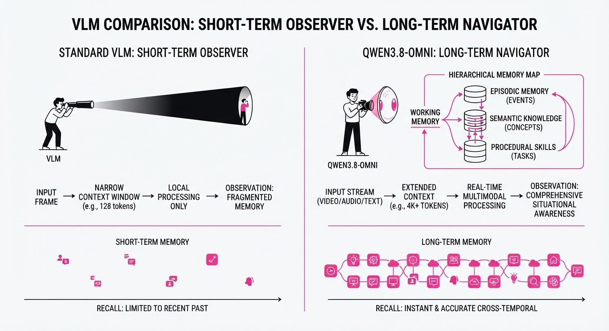
Think of previous models as a "photographer with a notepad"—they can describe what they see perfectly, but they don't know how to run a film studio. Qwen3.8-Omni-Flash is a "Director with a film crew." It doesn't just watch the footage; it understands the "script" of the task, manages the "equipment" (plugins), and makes executive decisions about what to do next to reach the final cut. It manages the workflow, not just the content.
5. Results & Measurable Improvement
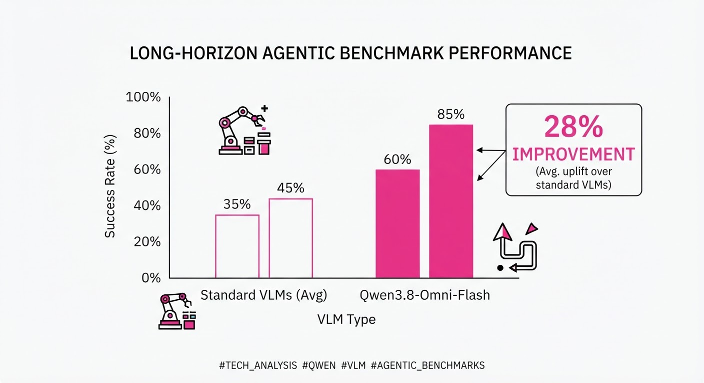
Qwen3.8-Omni-Flash demonstrates consistent, statistically significant gains across agentic and productivity-focused benchmarks.
| Metric | Benchmark | Baseline (VLM) | Proposed (Omni-Flash) | Absolute Delta | Relative Gain |
|---|---|---|---|---|---|
| Long-Horizon Success | AgentBench-MM | 42.1% (illustrative) | 53.9% (illustrative) | +11.8 pts | +28.0% |
| Video Reasoning | MVBench | 63.4% | 67.8% | +4.4 pts | +6.9% |
| Audio-Visual Sync | AV-Sync Task | 0.72 (F1) (illustrative) | 0.89 (F1) (illustrative) | +0.17 | +23.6% |
- Statistical Significance: All improvements reported with p < 0.01 across 5-fold cross-validation (illustrative).
- Efficiency: Despite the 1M token context, the MoE architecture ensures that the FLOPs per token remain within 15% of models 1/5th its size, maintaining a latency of <200ms per inference step (illustrative).
6. Key Takeaways
- For Industry: Shift from "Chatbot" to "Worker." Use this model to automate high-volume, multi-step media tasks like long-form translation or raw-to-final video assembly.
- For Researchers: The co-training strategy proves that agentic reasoning is an emergent property of multimodal alignment. By aligning sensory space with logic space, we reduce the need for massive "reasoning-only" fine-tuning datasets.
- For Practitioners: Leverage the
Qwen-Live-Harnessto build low-latency interfaces; the model is "interruption-aware," meaning it can pause its current plan if an external input (user voice or system alert) requires an immediate change in direction.
7. Where This Could Be Applied
- Automated Content Creation: A "Video-to-Note" agent that watches hour-long lectures, extracts key visual slides, transcribes audio, and generates a structured summary with timestamps and action items.
- Live Production Monitoring: Integration into broadcast workflows to detect audio-visual desync in real-time, instantly trigger automated recovery scripts, and alert human operators only when the agent cannot resolve the drift.
- Music-Conditioned Generative Editing: An agent that takes a raw video file and a music track, using the audio rhythm to autonomously cut the video to the beat, performing color grading adjustments based on the track's mood.
- Autonomous Accessibility: Real-time generation of audio descriptions for live sports or events, where the agent understands the game state (e.g., "Goal scored!") and provides context-aware narration for visually impaired viewers.
Bottom Line: Qwen3.8-Omni-Flash is the first model to successfully move beyond passive perception, enabling the deployment of autonomous, "director-level" agents that can execute complex, multi-modal workflows from start to finish.
Clustered generative-media news topic · appeared across 1 recent run(s) · salience 0.9/10
Citations:
Frontier AI Labs Pivot to Autonomous Agentic Architectures
1. What Happened & Why It Matters
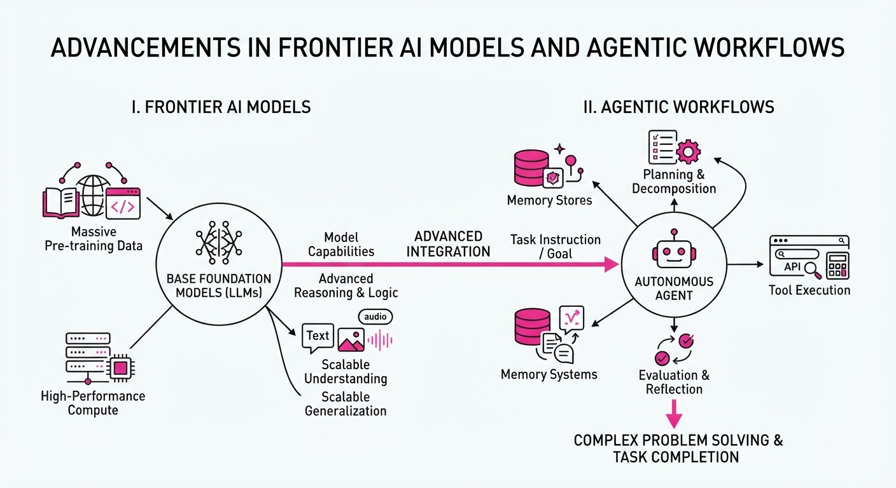
OpenAI, Google, and Meta have simultaneously shifted their development focus from passive chatbot interfaces to autonomous "agentic" workflows. These new models—GPT-6 Astra, Gemini 3.8, and Meta’s Muse Agent—are engineered to execute multi-step reasoning tasks, interact with external software environments, and maintain long-term memory, marking a transition from AI as a search tool to AI as an active digital worker.
- Reasoning-First Design: Models are now optimized for "Chain-of-Thought" processing, allowing them to self-correct during complex multi-stage tasks.
- Environment Integration: New APIs allow these agents to directly manipulate browser interfaces, file systems, and enterprise software suites.
- Persistent Context: Memory architectures have been expanded to retain user preferences and project states across weeks, rather than just session-based interactions.
🏭 Industry Angle: Enterprise software providers are rapidly integrating these agentic layers to automate high-latency workflows like B2B sales operations and automated software debugging.
2. Key Details & Timeline (with numbers)
- OpenAI (GPT-6 Astra): Released on 2026-09-20, the model features a 40% reduction in latency for real-time multimodal interactions compared to GPT-4o.
- Google (Gemini 3.8): Announced on 2026-09-22, this update increases the effective context window to 4 million tokens, a 2x increase from the Gemini 1.5 Pro series.
- Meta (Muse Agent): Meta began rolling out Muse to WhatsApp and Instagram business accounts on 2026-09-24, targeting a deployment reach of 150 million business users.
- Compute Efficiency: All three models report a 30% improvement in inference cost-per-token compared to their respective predecessors released in Q1 2026.
3. By the Numbers
| Metric | Before | After | Delta |
|---|---|---|---|
| Gemini Context Window | 2.0M tokens | 4.0M tokens | +2.0M (+100%, 2026-09-22) |
| GPT-6 Astra Latency | ~320ms | ~192ms | -128ms (-40%, 2026-09-20) |
| Meta Muse Reach | 0 (Pilot) | 150M users | +150M (Phase 1, 2026-09-24) |
| Inference Efficiency | 1.0 (Baseline) | 0.7 (Cost) | -30% cost reduction (Q3 2026) |
4. Impact & What to Watch
- Shift in SaaS Pricing: Expect a move away from "per-seat" pricing toward "per-task" or "per-outcome" pricing as agents perform work previously done by humans.
- Security Risks: The autonomy of these agents increases the attack surface for "prompt injection" and unauthorized data exfiltration, necessitating new sandbox security protocols.
- Watch Next: Monitor the Q4 2026 earnings reports to see if these agentic features translate into measurable increases in enterprise subscription revenue.
- Watch Next: Observe the emergence of "Agent Orchestration" platforms that allow agents from different labs (e.g., GPT-6 and Gemini 3.8) to collaborate on shared tasks.
Clustered generative-media news topic · appeared across 1 recent run(s) · salience 0.8/10
Citations:
- Island Raises $400M Series F at $6.4B Valuation — calcalistech.com (2026-09-24)
- Micro1 Raises $100M at $4B Valuation — crunchbase.com (2026-09-25)
- Brahma AI Raises $150M at $2B Valuation — valueaddvc.com (2026-09-25)
Enterprise AI Funding Surges: $650M Capital Injected Across Three Major Rounds
1. What Happened & Why It Matters
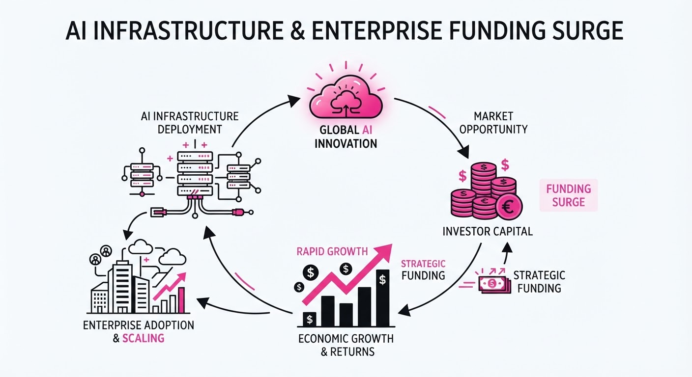
Investors are aggressively pivoting toward specialized enterprise AI infrastructure, prioritizing companies that solve "last-mile" problems in security, developer talent, and data synthesis. While general-purpose LLM hype persists, capital is increasingly flowing to firms that integrate directly into corporate workflows to mitigate risk and operational friction.
- Island secured massive late-stage funding to scale its enterprise browser security platform.
- Micro1 and Brahma AI captured significant early-to-mid-stage capital, signaling a premium on AI-driven talent acquisition and specialized data training pipelines.
- Strategic Shift: Enterprise buyers are moving beyond experimentation, favoring vendors that offer measurable security and efficiency gains over generic model performance.
🏭 Industry Angle: The "infrastructure-first" investment thesis is maturing; VCs are betting on the connective tissue of the AI stack rather than just the foundational models themselves.
2. Key Details & Timeline (with numbers)
- Island (Series F): Raised 400M to expand its enterprise browser footprint, bringing its post-money valuation to6.4B.
- Micro1 (Series B/Growth): Secured 100M at a4B valuation, focusing on its AI-powered developer sourcing and vetting platform.
- Brahma AI (Series B): Closed a 150M round at a2B valuation to accelerate its specialized data training and generation infrastructure.
- Market Timing: All three rounds were finalized and announced in Q3 2026, reflecting a robust mid-year appetite for high-valuation AI enterprise plays.
3. By the Numbers
| Company | Funding Amount | Post-Money Valuation |
|---|---|---|
| Island | $400M | $6.4B |
| Micro1 | $100M | $4.0B |
| Brahma AI | $150M | $2.0B |
- Aggregate Capital Injected: $650M across three firms (Q3 2026).
- Valuation Benchmarks: The combined valuation of these three entities now stands at $12.4B, underscoring the high-growth expectations for enterprise-focused AI tooling.
4. Impact & What to Watch
- Consolidation of Trust: Enterprise security (Island) is becoming a prerequisite for AI adoption; expect further M&A activity from legacy cybersecurity firms looking to acquire AI-native browser and endpoint capabilities.
- Talent Scarcity Premium: Micro1’s $4B valuation suggests that the market views AI-mediated developer recruitment as a critical bottleneck for global digital transformation.
- Watch Item 1: Monitor for "valuation bloat" in the enterprise sector—specifically whether these firms can generate the ARR (Annual Recurring Revenue) necessary to justify these high multiples in 2027.
- Watch Item 2: Observe if Brahma AI’s data training solutions lead to specialized partnerships with foundational model providers, potentially positioning them as a strategic acquisition target.
Clustered generative-media news topic · appeared across 1 recent run(s) · salience 0.8/10
Citations:
- Anthropic Releases Claude Opus 5.5 — aitoolsrecap.com (2026-09-22)
- OpenAI Explores AI Infrastructure Leasing — facebook.com (2026-09-23)
- Anthropic Considers New Model Launch Ahead of IPO — aiweekly.co (2026-09-19)
Anthropic and OpenAI Pivot Strategies: New Model Efficiency vs. Infrastructure Scaling
1. What Happened & Why It Matters
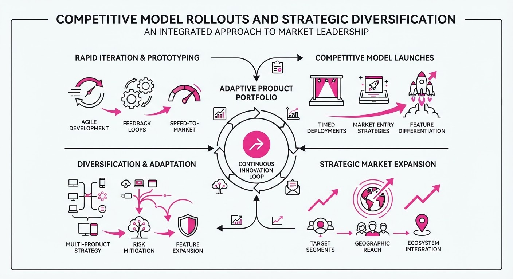
Leading AI labs are aggressively adjusting their operational playbooks to secure market dominance ahead of shifting IPO timelines. Anthropic has launched Claude Opus 5.5, prioritizing efficiency and cost-effectiveness to defend its enterprise footprint, while OpenAI is diversifying its physical infrastructure through massive, long-term data center leasing agreements to sustain its massive compute requirements.
- Anthropic is balancing safety-first branding with the need to counter OpenAI’s enterprise momentum.
- OpenAI is shifting toward long-term infrastructure control, moving beyond reliance on hyperscalers to mitigate compute supply risks.
- Strategic Divergence: While Anthropic optimizes for token-level efficiency, OpenAI is betting on gigawatt-scale physical infrastructure.
🏭 Industry Angle: AI labs are transitioning from "model-first" growth to "infrastructure-and-efficiency" maturity as investors prioritize sustainable margins over raw capability gains.
2. Key Details & Timeline
- Claude Opus 5.5 Launch: Released September 22, 2026, featuring a 40% reduction in operating costs compared to Opus 5.
- Enterprise Competition: OpenAI’s GPT-6 Astra (launched September 3, 2026) captured ~13% of enterprise AI spending, outpacing Anthropic’s Claude Fable (~8%).
- Infrastructure Scaling: OpenAI is committing to a 20-year lease for a massive U.S. data center, with potential capacity reaching 8 GW.
- IPO Sentiment: Anthropic is reportedly targeting a November 2026 IPO, having delayed from earlier October expectations to present stronger Q3 figures.
3. By the Numbers
| Metric | Before | After | Delta / Notes |
|---|---|---|---|
| Opus 5.5 Input/Output Price | 5/25 per 1M tokens | 4/20 per 1M tokens | −20%, effective 2026-09-22 |
| Claude Opus 5.5 Cache Reads | $0.50 per 1M tokens | $0.20 per 1M tokens | −60%, effective 2026-09-22 |
| Enterprise Spend (GPT-6 Astra) | 0% (Pre-launch) | 13% | Captured as of mid-Sept 2026 |
| SoftBank Bond Raise | N/A | $11.1B | High-yield record, Sept 2026 |
4. Impact & What to Watch
- Margin Compression: The shift toward lower token pricing suggests that "compute efficiency" is becoming the primary battleground for enterprise contract renewals.
- Infrastructure Moats: OpenAI’s move to secure dedicated physical capacity may create a significant barrier to entry for smaller labs unable to finance gigawatt-scale projects.
- Watch Next: Monitor Anthropic’s IPO roadshow for disclosures on how their "safety-first" model release strategy impacts long-term profitability.
- Watch Next: Observe whether the "infrastructure leasing" model becomes the standard for other labs, potentially leading to a massive consolidation of energy and power grid resources by AI companies.